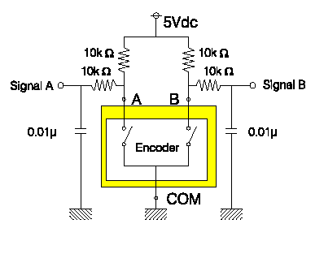
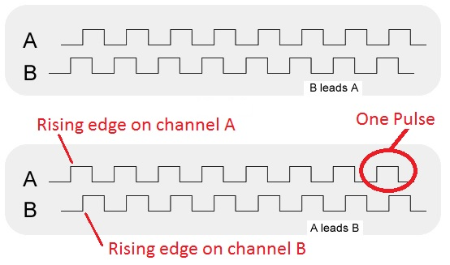

| Lecture: | 12 |
| Objective: | How to measure time inteverals of pin events using the capture subsystem. This include the configuration of the subsystem and assocaited timers. |
| Code: | lec12.c |
Timer Capture
We have now examined two important components of the timer subsystem, the 16-bit counter and compare modules. The compare module looks for a match between TMRx and a value stored in CCPx. We now introduce a timer capability that allows you to capture the timer when a prescribed event occurs on the associated pin. This is the capture feature and is schematically represented in the figure below.
The timer subsystem, adapted from Figure 14-1 on page 174 of the PIC18(L)F2X/4XK22 Data Sheet
Capture Subsystem
The capture subsystem captures the value of TMRx when some prescribed event occurs on the associated pin. Let's start our discussion with the pin itself. Each capture/compare module is associated with a single pin given in the following table:| CCP module | Pin |
| CCP1 | RC2 |
| CCP2 | RC1 (or RB3) |
| CCP3 | RB5 (or RC6) |
| CCP4 | RB0 |
| CCP5 | RA4 |
| CCPxM | Configuration |
| 0b0100 | Capture on every falling edge |
| 0b0101 | Capture on every rising edge |
| 0b0110 | Capture on every 4th falling edge |
| 0b0111 | Capture on every 16th falling edge |
| CxTSEL | Timer |
| 0b00 | CCPx module uses TMR1 |
| 0b01 | CCPx module uses TMR3 |
| 0b10 | CCPx module uses TMR5 |
| 0b11 | Reserved |
In addition, when configuring the capture/compare subsystem in the capture mode, the associated pin should be configured as an input.
To see how these concepts can be applied to the solution of practical problems we will examine a device to determine the RPM of an engine and the second to determine the muzzle velocity of a projectile.
Quadrature Encoder
Imagine we are working in an application that has some moving mechanisms. Our system issues commands to move the mechanism by a finite amount. In many applications, the resulting movement will contain some amount of error. In applications where this uncertiantity is unacceptable, we need some feedback mechanism that tells the us how much the system actually moved. One popular feedback mechanism is a quadrature encoder or quad encoder for short. A quad encoder is a 2-channel sensor that provides directional as well as positional feedback. In other words, a quad-encoder tells you which direction the mechanism moved and by how much. A mechanical quad encoder is easily built from an a specially etched copper disk and a pair of contacts forming a pair of normally open switches shown in the yellow box in the schematic below. A pair of 10kΩ resistors pulls the switch outputs high. The internal mechanical operation of a mechanical quad encoder produces a lot of switch bouncing which is surpressed in this circuit with a pair of low-pass filters (formed by a 10kΩ and 0.01µF) in front of the signal output.
The 2 channels are frequenty called A and B. Both A and B are 50% duty cycle square waves. Each period of A or B corrsponds to some known amount of movement of the mechanism. The sqaure waves on channels A and B have the same frequency but are out-of-phase by 90°. The channel which has its positive edge 90° before the other channel's positive edge is said to lead. The image below shows two examples of the channels leading each other.

Taken from National Semiconductors "How Do I Use a Quadrature Encoder with My Data Acquisition Board?"
If each pulse on a channel represents a known amount of movement, then the speed of the mechanism is proportional to the number of pulses per unit time. More pulses in a unit of time means the mechanism is moving faster. Fitting more pulses in a unit of time means that the period of the pulses must be shorter. Thus, if we can measure the duration of the pulses, we can determine the speed of the mechanism.
Lets measure the speed of a DC motor that we will use in our next lab, Polou micro metal gearmotor. This motor is connected to the Pololu Wheel Encoder. I did some experiments driving the motor with different duty cycle waveforms and looked at the duration of the pulses coming from the wheel encoder to get the data in the table below. Note, I only looked at channel A; I didn't care about the direction of the wheels rotation.
| Duty Cycle | Encoder Pulse Width |
| 0x30 | 31.0 ms |
| 0x60 | 19.1 ms |
| 0x90 | 12.8 ms |
| 0xC0 | 9.7 ms |
| 0xF0 | 8.0 ms |
The first thing that we need to do is to determine the timer prescaler. Since the longest pulse that we intend to measure is 31 ms long, we should use a 1:8 prescler because the its maximum period is 32.8 ms.
The idea that I have for the code is to stick it in an infinite loop so that it measures the pulse durations forever. My code will first look for a positive edge on RC2, record the start time, and then look for a negative edge and record the end time of the pulse.
int16 start, end;
TRISCbits.RC2 = 1; // Make pin RC2 an input
CCP1CONbits.CCP1M = 0b0101; // Enable the capture channel 1 on rising edge
CCPTMRS0bits.C1TSEL = 0b00; // Associate TMR1 with CCP1
T1CONbits.T1CKPS = 0b11; // 1:8 prescale
T1CONbits.TMR1ON = 1; // Turn on timer 1
for(;;) {
CCP1CONbits.CCP1M = 0b0101; // Capture on rising edge on RC2
PIR1bits.CCP1IF = 0; // CCPR1 register when a falling
while (PIR1bits.CCP1IF == 0); // edge of RC2 is detected
start = CCPR1;
CCP1CONbits.CCP1M = 0b0100; // Capture on falling edge on RC2
PIR1bits.CCP1IF = 0; // CCPR1 register when a falling
while (PIR1bits.CCP1IF == 0); // edge of RC2 is detected
end = CCPR1; //
// speed = calculateSpeed(end - start);
}
Test your understanding
You can find the solutions embedded in the "source code" for this web page by right mouse clicking on this web page and selecting "view source". The solutions are in HTML comments.- Complete the speed calculation for the wheel. That is, given the number of 8:1 prescaled timer counts for a single pulse from a 12 spoke 43mm diameter wheel. Note that there are 12 spokes so there are 12 logic 1 pulses per wheel rotation.
-
Muzzle Velocity
You are working on an Electromagnetic railgun and need an accurate method of determining the muzzle velocity. To accomplish this goal you setup a speed trap consisting of a pair of sensors placed 1 meter apart. The projectile, when fired, passes by the first sensor sending a logic 1 pulse to PT0 and then passes by the second sensor a short while later producing a logic 1 pulse on PT1. The railgun is anticipated to have a muzzle velocity of 2,400 m/s. Your tasks are to:- Use a 1:1 prescaler, determine the number of counts between a projectile moving between the two sensors at the anticipated velocity.
- Write a code snippet that records the number of timer counts for the projectile to move between the two sensors. Use the capture subsystem.
- Write an equation that relates the number of timer counts to the projectile velocity.
-
RPM measurement
Most modern car engines use computers to monitor and control almost every major function in an engine. Among the most important is the timing of the spark which ignites the gas-air mixture inside a cylinder. If the spark occurs too early, the explosion inside the cylinders will collide with the upward moving piston causing the engine to "knock". If the spark occurs too late, the expanding gasses from the explosion will not fully impart their energy into the piston causing the engine to hesitate. The timing of the spark is determined in large part by the Hall-effect camshaft position sensor. A small magnet is embedded in the crankshaft that rotates in time with the moving pistons. A Hall-effect sensor placed next to the crankshaft nominally outputs logic 0, buts outputs a brief logic 1 pulse every time the magnet passes by. These pulses are fed into the engine control unit (ECU) which is running a PIC. It's your job to write a program which calculates the RPM for a crankshaft that rotates somewhere between 800 (lowest RPM before the engine stalls) and 10,000 RPMs (when the rev-limiter kicks). Your PIC is attached to the camshaft position sensor through RC2. Your tasks are to:- Determine the clock speed and prescaler necessary to measure engine RPMs.
- Write a code snippet to measure the number of timer counts required for the camshaft to make a single rotation.
- Write an equation relating timer counts to RPMs.